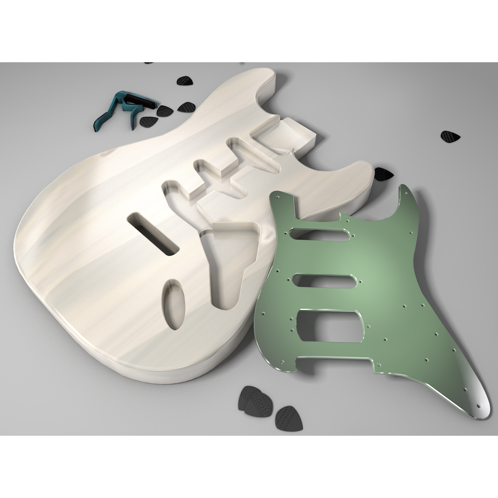

About
I am a senior in Computer Engineering at Iowa State University!
Over the course of my college career, I've discovered I love to create and teach. Along with Computer Engineering, a Digital Media minor from the college of design lets me do that. I spent eight months on an internship making tutorials, and the Fall of 2014 I learned 3D modeling. I want to combine the two upon graduation.
A little bit about me; I really dig reading, playing video games and the guitar. I also love to play soccer. If I'm not doing one of those things, I'm probably programming. The web-based languages are my favorite (HTML, CSS, Javascript and JQuery). My hopes and dreams include traveling abroad, getting a job after graduation and finally beating my little brother at Mario Kart.
This website is my portfolio and also a side project of mine. It was coded from scratch using validated HTML5 and CSS, and I will continue to edit it in my free time.
Projects
Digital Media
The Fall of 2014, I enrolled in two 3D imaging classes. One is a 3D animation course, and the other is a 3D modeling class. All the following were done using Cinema 4D and After Effects.
The videos came from the 3D animation course. The first is a minute long video about Neptune. The second is my final project for my 3D animation course, and is a video about how an electric guitar works.
Below are examples of my work for the 3D Modeling course. The cat was modeled after a pink stapleless stapler. The other two are modeled after a Fender Stratocaster. The full guitar is a '59 Mary Kaye Strat.



Computer Engineering
Industry
Photography
In May of 2014, my little brother graduated from high school. In hand with my brand new DSLR camera and photoshop, I took and edited his senior photos. Below are a few examples of the final edits.

In the Spring of 2014, my beautiful sister got engaged! I was lucky enough to capture the moment. Below are a few of the pictures of the happy couple.
Work Experience
ELO Video Editor, Iowa State University (August 2014 - November 2014)
FIELDVUE Marketing Coop, Emerson Process Management (January 2014 - August 2014)
Computer Support Assistant, Iowa State University (September 2012 - December 2013)
Administrative Assistant, Von Arb Stuff, LCC (May 2012 - August 2012)
Game Advisor, Gamestop (October 2008 - May 2012)
Education
During my time at Iowa State, I was a member of Digital Women. DW is a club focused on retaining women in the computer science majors. I held the positions of secretary and vice-president.
I was also involved in the Fencing Club for a number of years and even participated in couple tournaments.
As well as being involved with clubs, I am involved in the Electrical and Computer Engineering college. I have been an ECpE Mentor for the past year and I was on an interview panel when the college was looking for a new advisor.
Contact